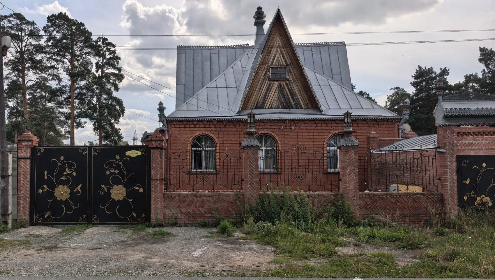
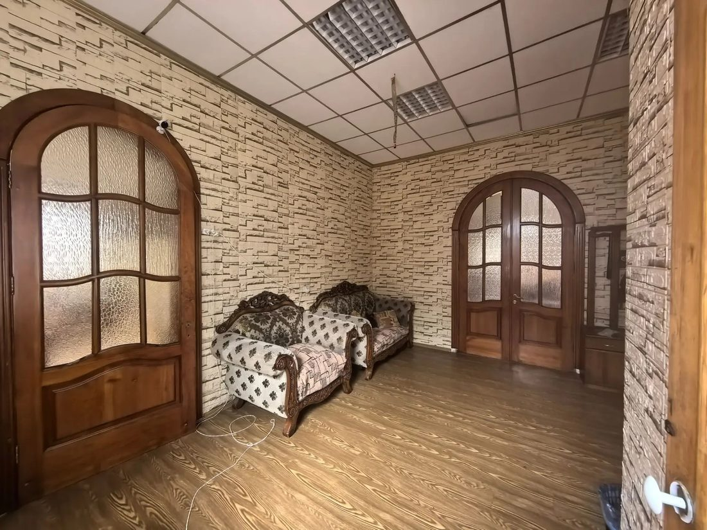
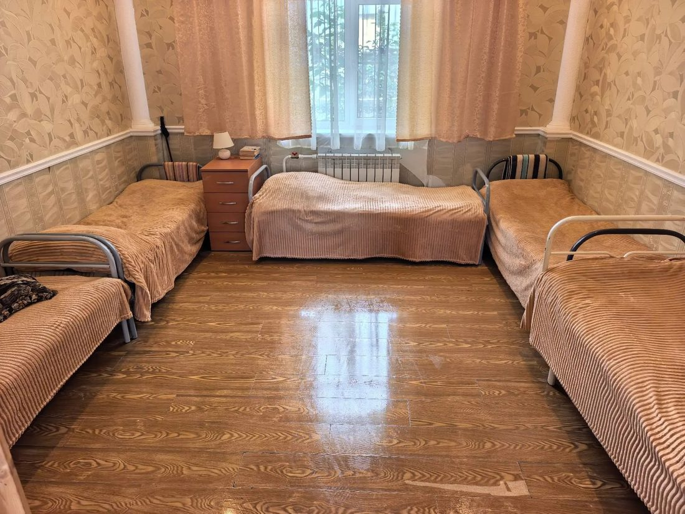
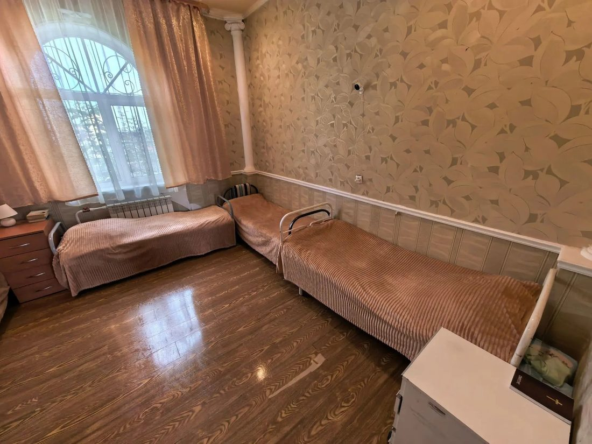
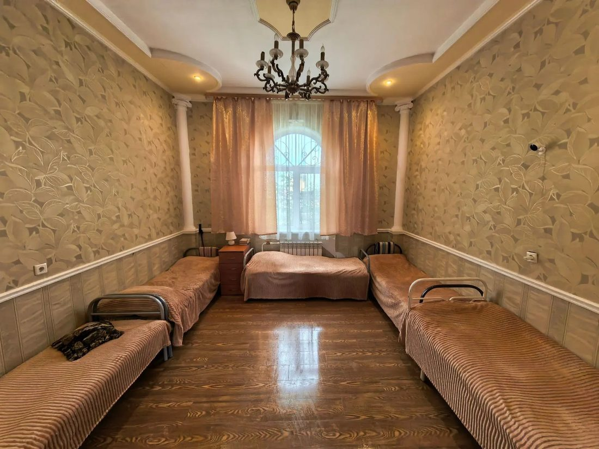
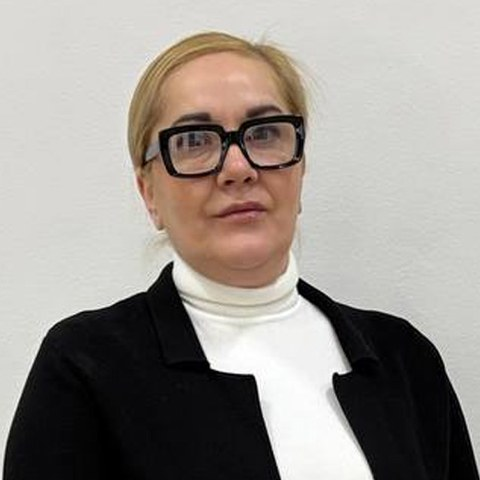

Пожилые люди, которым одним уже тяжело
Слабость, головокружения, забывчивость, страх упасть в пустой квартире. Здесь всегда есть кто-то рядом: помогут встать, дойти, вспомнить про лекарства, просто поговорить.
Настройки запомнятся на этом устройстве
Частный пансионат для пожилых людей и людей с инвалидностью в Новосибирске. Круглосуточный уход и наблюдение, восстановление после инсульта и перелома шейки бедра, бережное сопровождение при деменции. Родные приезжают когда хотят — без записи и без «часов посещений» на бумажке.

Не нужно быть «удобным» подопечным. Мы работаем и с теми, кто не встаёт, и с теми, кто путает день с ночью. Главное — честно рассказать нам о состоянии, чтобы мы подобрали правильный формат ухода.
Слабость, головокружения, забывчивость, страх упасть в пустой квартире. Здесь всегда есть кто-то рядом: помогут встать, дойти, вспомнить про лекарства, просто поговорить.
Смена положения тела, противопролежневые матрасы и обработка кожи, кормление, смена белья и подгузников, гигиена в постели. Всё то, что дома выматывает семью за две недели.
Восстановление движения и речи по назначениям врача, занятия каждый день, контроль давления, помощь в еде и передвижении.
Вертикализация, безопасные пересаживания, обезболивание по назначению врача, уход за кожей и профилактика застойной пневмонии.
Безопасная среда, спокойный режим, наблюдение днём и ночью. Не спорим и не ругаем — переключаем и успокаиваем.
Сопровождение взрослых людей с инвалидностью: гигиена, питание, быт, прогулки, помощь в оформлении бытовых вопросов.
Восстановление после выписки из стационара: режим, питание, перевязки и процедуры по назначению врача, контроль состояния.
На неделю, на месяц, на время вашего отпуска, командировки или ремонта. Можно попробовать формат, не принимая решений «навсегда».
Позвоните и опишите ситуацию. Если мы не сможем обеспечить нужный уход — скажем прямо и подскажем, куда обратиться.
Всё, что перечислено ниже, входит в суточную стоимость. Отдельно оплачиваются только личные вещи, лекарства по рецепту и платные обследования вне дома.
Мы честны в главном: пансионат — это уход, режим и наблюдение, а не больница. Лечение назначает врач. При ухудшении состояния мы вызываем скорую помощь и сразу звоним родным — в любое время суток, даже в три часа ночи.
Режим — это не казарма. Это опора для памяти и нервной системы: понятный день снимает тревогу лучше любых уговоров. Синим отмечено то, что происходит в доме прямо сейчас.
Мы специально не делали «учреждение». Здесь домашняя мебель, живые растения, запах еды из кухни и двор, куда можно выйти посидеть на солнце. Всё остальное — про безопасность.




Отдать родного человека в чужие руки страшно. Поэтому всё, что обычно вызывает тревогу, у нас описано заранее и открыто.
Цена в сутки закреплена в договоре. Никаких «доплат за тяжёлый уход» задним числом: если состояние изменилось и нужен другой формат — мы обсуждаем это с вами заранее.
Ежедневно с 9:00 до 21:00, без «приёмных дней» и предупреждений. Звонить можно в любое время — телефон дежурной смены доступен круглосуточно.
Коридоры, гостиная, столовая, вход. В комнатах камер нет — это личное пространство человека.
Датчики дыма, огнетушители, план эвакуации, регулярный инструктаж персонала и свободные пути выхода.
Ежедневная уборка и обработка поверхностей, отдельное размещение при простуде, личная посуда и средства гигиены.
Медицинские книжки, обучение уходу за маломобильными, стажировка перед самостоятельной сменой.
Фиксации и «успокоительных» без назначения врача. Запретов звонить родным. Скрытых доплат «за особый уход» сверх договора. Отказа показать дом до заключения договора. Если вам где-то предлагают такое — это повод развернуться и уйти.
Когда отдаёшь родного человека в чужие руки, важно знать, с кого спрашивать. Вот люди, которые ведут этот дом каждый день, — с прямым телефоном, а не через секретаря.
Отвечает за дом целиком: договор, условия проживания, безопасность, приём новых подопечных. Если что-то пошло не так — звоните напрямую, без администраторов и очереди на линии.
8 923 44-111-22
Отвечает за то, как проходит день подопечного: смены сиделок, питание и диеты, гигиена, режим, связь с родными. С ней обсуждают всё, что касается самочувствия и привычек человека.
8 923 44-111-22Персонал дома — сиделки и помощники по уходу — работает с медицинскими книжками, проходит обучение уходу за маломобильными людьми и стажировку перед первой самостоятельной сменой. Познакомиться со сменой можно прямо на просмотре дома, до подписания договора.
Мы не единственный вариант и не всегда лучший. Вот как три пути выглядят рядом, без прикрас — чтобы вы решали, зная расклад.
| Что важно | Сиделка дома | Государственный интернат | Пансионат «Надежда Есть» |
|---|---|---|---|
| Когда можно начать | Подбор человека 3–10 дней, при болезни ищете замену сами | Через соцзащиту: пакет документов, очередь, направление | Осмотр дома сегодня, заезд завтра |
| Уход ночью | Только если оплачена ночная смена отдельно | Один пост на отделение | Дежурная смена и обход каждые 2 часа |
| Питание | Готовит сиделка — как умеет и успевает | Общее меню учреждения | Пятиразовое, диета по назначению врача |
| Если стало хуже | Зависит от того, кто в этот момент рядом | По внутреннему регламенту учреждения | Скорая и звонок родным сразу, в любое время суток |
| Общение | Один на один в четырёх стенах | Большое отделение, персонал на потоке | 20 мест: соседи, гостиная, прогулки, праздники |
| Сколько стоит в месяц | 45 000–90 000 ₽ плюс продукты, лекарства и быт | До 75% пенсии подопечного — но нужно дождаться места | от 45 000 ₽, проживание и уход включены |
| Кто отвечает | Чаще всего устная договорённость | Учреждение по регламенту | Договор с фиксированной ценой на руках |
Стоимость сиделки и правила государственного обслуживания приведены по данным на 2026 год и могут отличаться в вашем случае.
Точную стоимость называем после короткого разговора о состоянии человека. Ниже — честные ориентиры, от которых мы считаем.
Для тех, кто в целом себя обслуживает или передвигается с поддержкой
Расчёт занимает 10 минут по телефону
Лежачим, после инсульта, перелома шейки бедра и операций
Первые 3 дня — адаптация: не подошло, платите только за прожитые дни
Деменция, тяжёлое состояние, потребность в отдельной комнате
Берём в том числе «сложных» подопечных
Дневное пребывание — от 800 ₽ в день. Временное размещение — от 7 суток: на время вашего отпуска, командировки, ремонта или восстановления после операции.
Посчитать для вашего случаяБез формы, без телефона, без «оставьте заявку и мы вышлем прайс». Расчёт ориентировочный: точную цену называем после разговора о состоянии человека.
10 минут разговора: спросим о состоянии, привычках и диагнозах. Честно скажем, сможем ли обеспечить нужный уход.
Без записи, любой день с 9:00 до 20:00. Покажем комнаты, кухню, двор, познакомим с персоналом. Можно приехать вместе с близким.
Собираем несложный пакет справок — подскажем, где и что взять быстрее. Подписываем договор с фиксированной ценой.
Встречаем, помогаем разместиться. Первую неделю созваниваемся с родными каждый день и рассказываем, как проходит привыкание.
Не хватает какой-то справки — не страшно: подскажем, где и как оформить её быстрее, и примем человека, пока документы досдаются. Договор заключается в день заезда, второй экземпляр остаётся у вас на руках.
Мама после инсульта, дома мы с сестрой продержались полтора месяца и просто выгорели. Здесь её подняли на ноги до ходунков. Приезжаю в разное время, без предупреждения — всегда чисто, мама ухожена и спокойна.
У отца деменция, он путал день с ночью и уходил из дома. Боялись, что его «привяжут и накачают». Ничего подобного: режим, прогулки, он стал спокойнее. Звоню вечером — всегда подробно рассказывают, как прошёл день.
Брали бабушку на три недели, пока были в отъезде. Думали, будет скандал, а она попросилась ещё — говорит, там с ней разговаривают. Цена оказалась ровно такой, как назвали по телефону.
Перезвоним в течение 15 минут в рабочее время и в ближайшее утро, если вы написали ночью. Консультация ни к чему вас не обязывает.
Ответим на все вопросы и подберём формат ухода. Бесплатно.
Мы перезвоним в ближайшее время. Если вопрос срочный — звоните сами: 8 923 44-111-22.